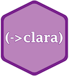

Cerner Open Source
At Cerner, we ❤️ open source. Open source software is an integral part of our software and is crucial to running and operating our applications and services globally. Our engineers contribute to open source projects and Cerner is proud to provide financial support to organizations like the Apache Software Foundation. Here are some of our own projects that we’ve released as open source.
Terra
Terra offers a set of configurable React components designed to help build scalable and modular
application UIs. The library easily integrates with webpack-based workflows and was created to solve
real-world issues in projects we work on day to day.
Learn More...
Bunsen
Bunsen integrates Apache Spark and FHIR, combining Spark's scalable processing advantages with
FHIR's well-defined and curated data. This enables a number of deep analytic and machine learning
workloads that can be ported across systems.
Learn More...
Clara Rules

Clara is a forward-chaining rules engine written in Clojure(Script) with Java interoperability. It
aims to simplify code with a developer-centric approach to expert systems.
Learn More...
CDS Services Tutorial
Clinical Decision Support (CDS) Hooks is a specification that enables integration of remote
decision support within a clinician's EHR workflow through a "hook"-based pattern. This
tutorial will help walk you through setting up real CDS Services and acting as the 3rd party
providing decision support to an EHR system.
Learn More...
Beadledom
Beadledom is a bundle of common components required for building JAX-RS web services.
It is the starting point for new services. The core of Beadledom provides health checks,
monitoring via Stagemonitor, API docs via Swagger, JSON serialization via Jackson, and
integration of these components with Guice.
Learn More...
SMART® on FHIR® Tutorial
The SMART tutorial is intended to help developers quickly create an example smart app,
register it with Cerner's code console, and test it against Cerner's sandbox. It is a Slate
site hosted through GitHub Pages and includes a small example app in the source folder.
Learn More...
Canadarm
Canadarm makes JavaScript logging easy and seamless, helping you figure out what went wrong
with your scripts. Named for the Canadarm
we hope this too helps you piece together log information to figure out what went wrong with your scripts.
Learn More...
Carbon Graphs
Carbon is a graphing library built using D3 visualization library. It provides an API
for generating native graphs such as Line and Paired Result graphs based on design
standards.
Learn More...
GC Stats

gc_stats is a Ruby gem for Rails applications that collects and logs garbage collection
statistics during each request. GC statistics are only logged if a GC event is detected.
This allows you to track and analyze the GC characteristics of your Rails application.
Learn More...
Jwala
Jwala is a web application that provides management for a group of Tomcat servers. Jwala is capable of
creating and persisting definitions of Group instances, and exposes a RESTful interface to do so.
The definition of a Group includes Web Apps, JVMs, Web Servers, and Resources.
Learn More...